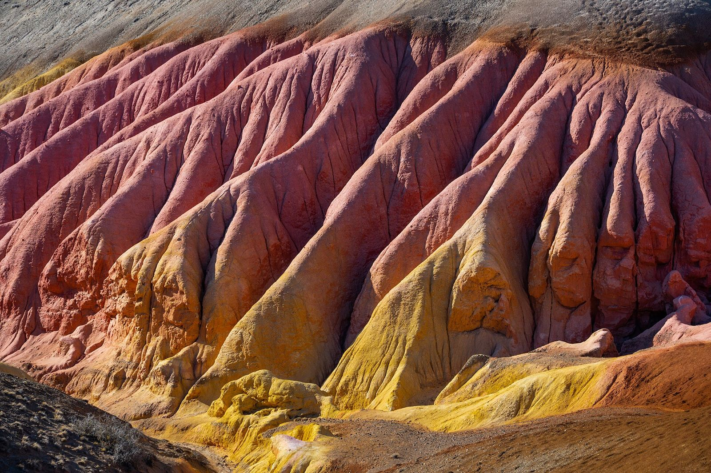
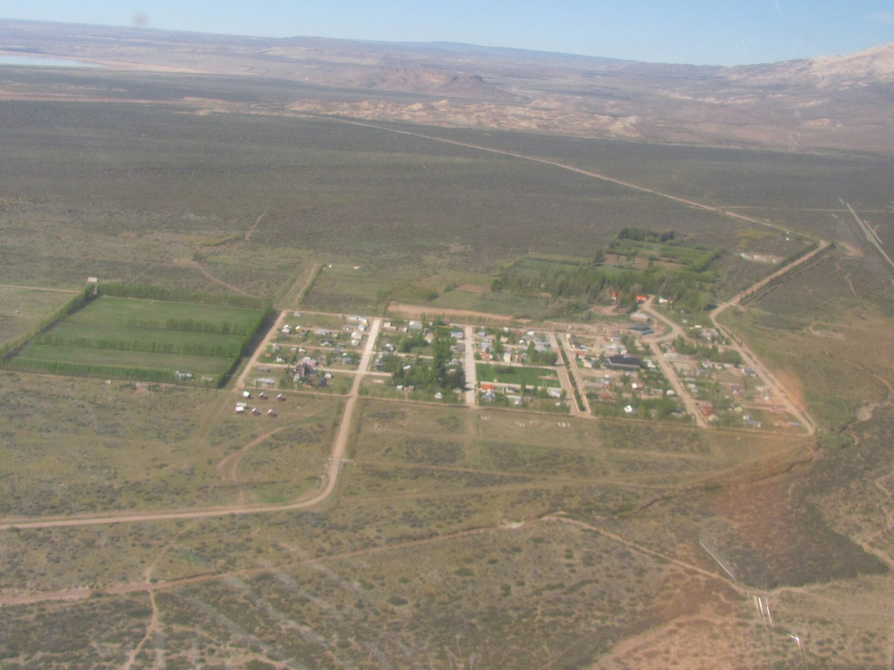
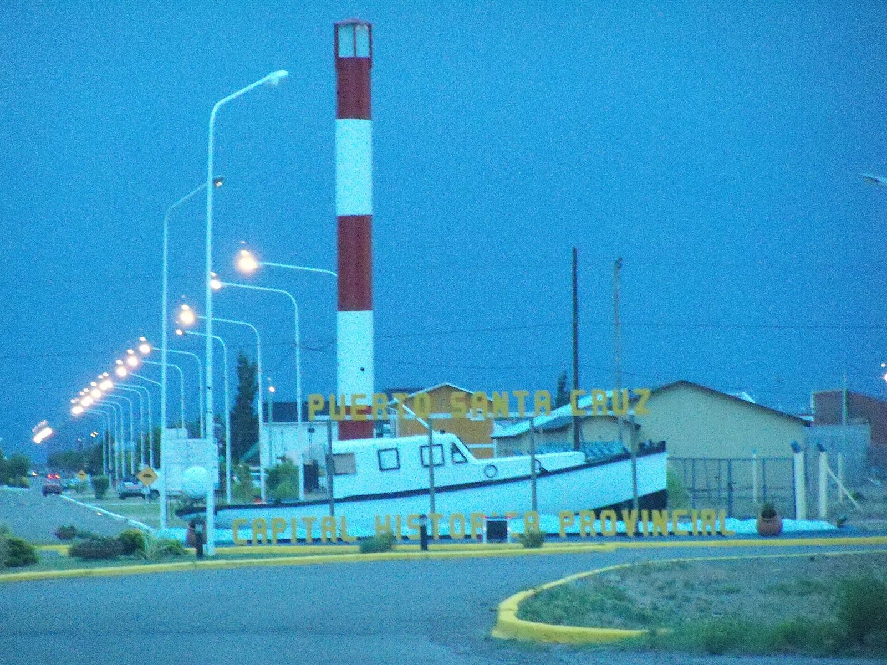
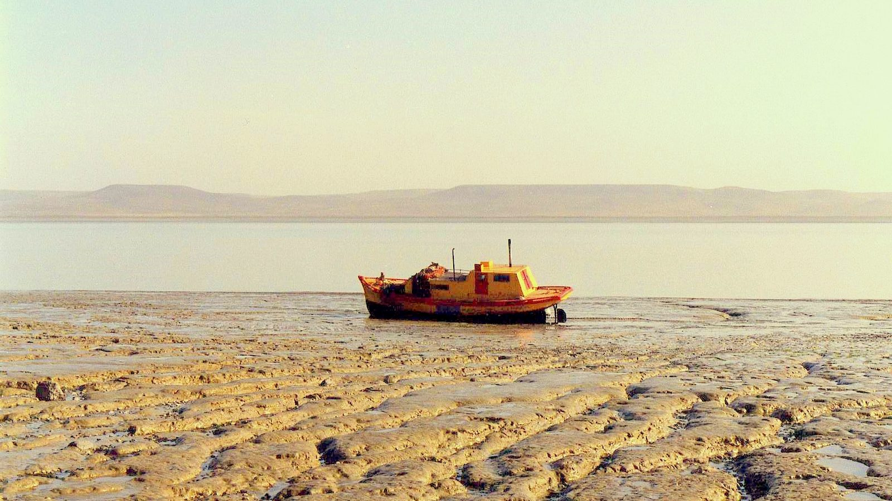
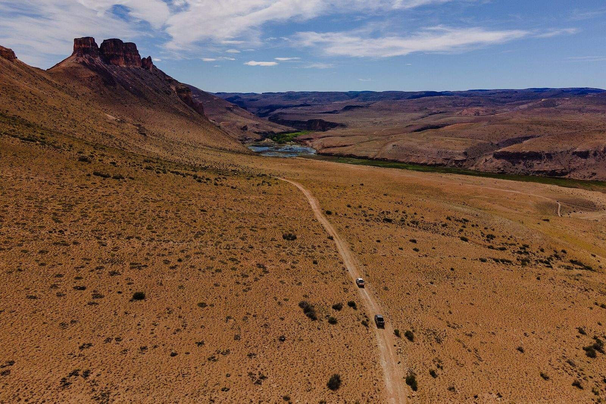

Articles
Practical guides to plan your trip, with a source for every fact.

Photo: Horacio Barbieri / ArgentinaTurismo · CC BY 4.0 · Wikimedia Commons
Practical guide
Patagonia Park: a guide to Cañadón Pinturas, its trails and how to get there
How to get to Patagonia Park in Santa Cruz: the Cañadón Pinturas Gateway on Ruta 40, trails, entry fee, campsites, Cueva de las Manos, La Ascensión, El Sauco and tips.

Photo: Ppviorgullo · CC BY-SA 4.0 · Wikimedia Commons
Practical guide
Lago Posadas and Ruta 41: a guide to northwestern Santa Cruz
Lago Posadas and Ruta 41: getting there via Bajo Caracoles or the 155 km gravel road from Los Antiguos, the isthmus between lakes Posadas and Pueyrredón, rock art, fishing and tips.

Photo: Carla González · CC BY-SA 3.0 · Wikimedia Commons
Practical guide
Things to do in Puerto Santa Cruz
Things to do in Puerto Santa Cruz: estuary waterfront, Borgialli museum, historic sites, fishing, Isla Leones, Punta Quilla and Monte León. How to get there and when to go.

Photo: Andreacav7 · CC BY-SA 4.0 · Wikimedia Commons
Practical guide
Things to do in Piedra Buena and Monte León National Park
Things to do in Piedra Buena and Monte León: Isla Pavón and the Santa Cruz River steelhead and, 35 km away, the penguin colony, the sea lion colony and the Lion's Head. Opening hours, fees and how to get there.

Photo: rodoluca · CC BY-SA 3.0 · Wikimedia Commons
Practical guide
Things to do in Río Gallegos
Things to do in Río Gallegos: the waterfront and estuary birds, historic center and museums, Cabo Vírgenes, Laguna Azul and estancias. How to get there, when to go and how many days to stay.

Photo: Mikelzubi · CC BY-SA 4.0 · Wikimedia Commons
Practical guide
Things to do in Caleta Olivia
Things to do in Caleta Olivia: the Gorosito statue, the Punta Sur sea lion colony, the coastal promenade and Gulf of San Jorge beaches, how to get there, when to go and how many days to stay.

Photo: ArgentinaTurismo · CC BY 4.0 · Wikimedia Commons
Practical guide
Things to do in Perito Moreno, Santa Cruz
Things to do in Perito Moreno, Santa Cruz: how to get there, Laguna de los Cisnes, Gradin museum, Cueva de las Manos, Alero Charcamata, weather and tips.

Photo: Natifuzz · CC BY-SA 4.0 · Wikimedia Commons
Practical guide
Things to do in Gobernador Gregores
Things to do in Gobernador Gregores: how to get there, lakes Cardiel and Strobel, Cañadón de los Muertos, Perito Moreno National Park and travel tips.

Photo: Mikelzubi · CC BY-SA 4.0 · Wikimedia Commons
Practical guide
Puerto Deseado weather: when to go
Puerto Deseado (Santa Cruz) weather: SMN temperatures by season, wind, when to visit the Deseado estuary and Penguin Island, and what to pack. With official sources.

Photo: Claudio Elias · Public domain · Wikimedia Commons
Practical guide
Jeinimeni Pass: how to cross from Los Antiguos to Chile Chico
Río Jeinimeni Pass between Los Antiguos and Chile Chico: opening hours, documents for Argentines and foreigners, vehicle papers, the SAG declaration and tips.

Photo: Oscar871217 · CC BY 3.0 · Wikimedia Commons
Practical guide
Ruta 40 in Santa Cruz: sections, fuel and gravel
Ruta 40 in Santa Cruz: which sections are still gravel, where to get fuel, distances between towns, when to travel and tips for driving it.

Photo: Hiroki Ogawa · CC BY 3.0 · Wikimedia Commons
Practical guide
How to get to the Cueva de las Manos
How to get to the Cueva de las Manos from Perito Moreno and Bajo Caracoles: gravel access roads, the hike from the Cañadón Pinturas Portal, guided visits, opening hours, where to stay and tips.
Photo: Mikelzubi · CC BY-SA 4.0 · Wikimedia Commons
Practical guide
Things to do in Puerto Deseado
Things to do in Puerto Deseado: the Deseado estuary, Penguin Island, Cabo Blanco, museums and the Petrified Forests. How to get there and when to go.

Photo: Gastón Cuello · CC BY-SA 4.0 · Wikimedia Commons
Practical guide
Things to do in Puerto San Julián
Things to do in Puerto San Julián: the Nao Victoria, penguins, Commerson's dolphins, the Coastal Circuit and Laguna del Carbón. Where it is and how to get there.

Photo: Msacla · CC BY-SA 3.0 · Wikimedia Commons
Practical guide
Where is Puerto San Julián? How to get there and what to do
Where Puerto San Julián (Santa Cruz) is, how to get there by car or bus on Route 3, distances to Río Gallegos and Caleta Olivia, and what to do: the Nao Victoria, the bay, La María.